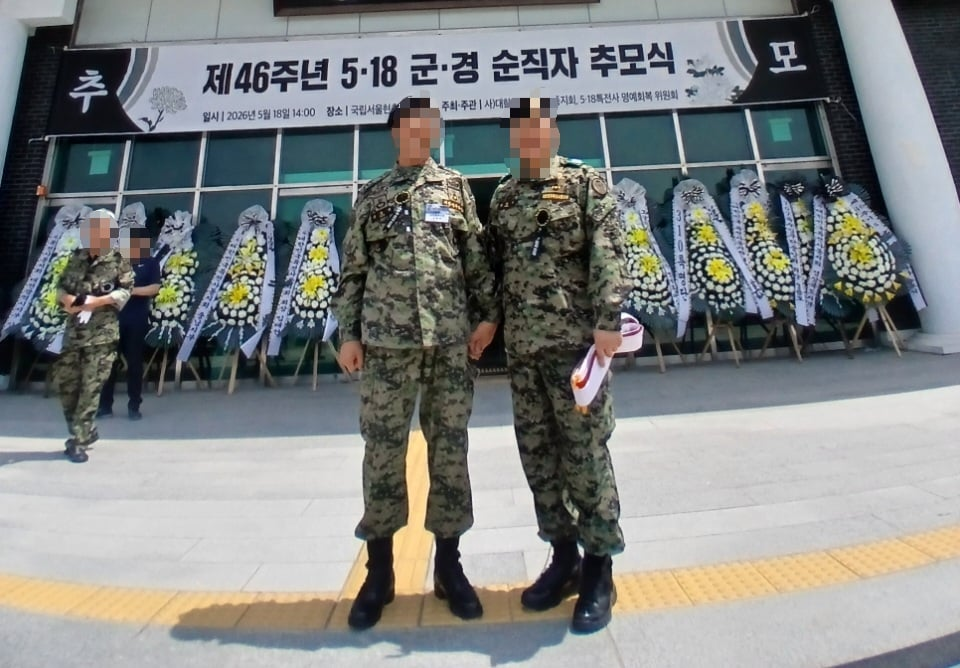
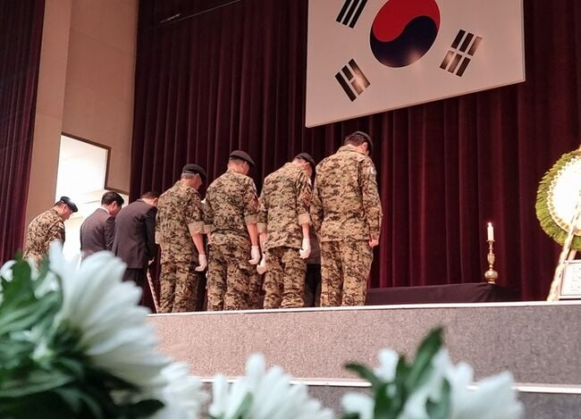
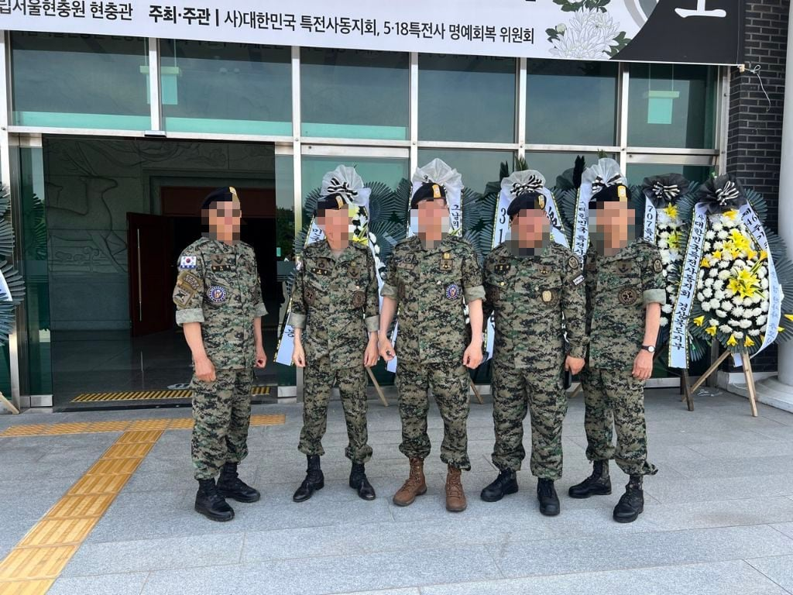
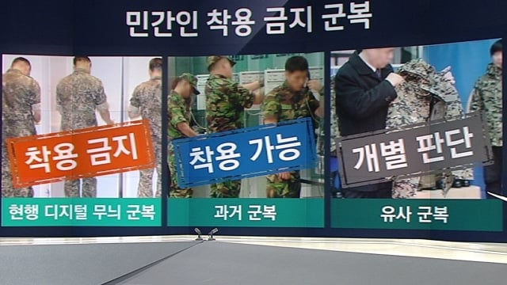

몇달전인 5월 18일, 현충원에서 있었던 일임.
당시 나는 서울에서 지인을 만나고 본가로 돌아갈려 했는데....
고속버스 출발 예정 시간이 4시간이나 남았었음.
나는 그때 터미널에만 앉아있으니 너무 지루하기도 하니까
현충원에 잠시 방문했는데...
현충관을 지나가다가 이딴 행사를 하는걸 보고 뒷목 잡았음 ㅅㅂ....

(실제 작성자가 찍어준 사진)
그때 나는 뭔 개짓거리를 하나 싶어서 가까이 다가갔는데....
'현용 특전사 전투복' 입은 한 아재가 사진 좀 찍어달라고 하길래 속으로는 쌍욕을 하면서 찍어줬음....

사진을 찍어준 후 열받지만 침착하게 '무슨 행사인가요?' 물어봤더니... '광주사태 당시 '전사'한 특전사 대원 추모하는 행사다' 이딴 소리를 들었는데다....

전투복을 자세히 보니 현역 군인들도 아니고 '특전사 동지회' (특전사 전역자모임, 민간인 단체) 사람들이었음...

그때 나는 '민간인이 '현용 특전사 군복' 입는건 불법 아닌가?'는 생각이 들었음... ㄹㅇ
아근데 자세히보니 추모주체가 군인이 아니네..??